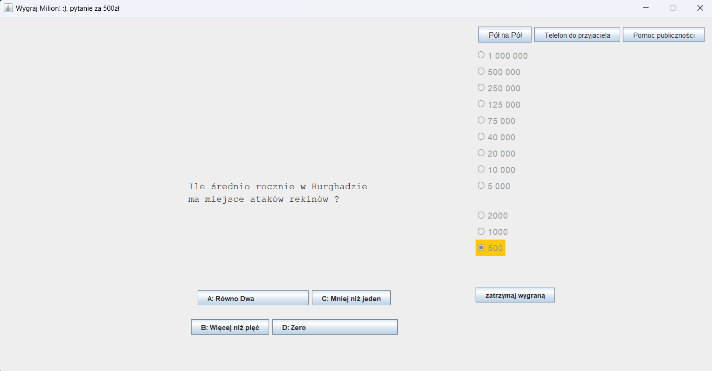
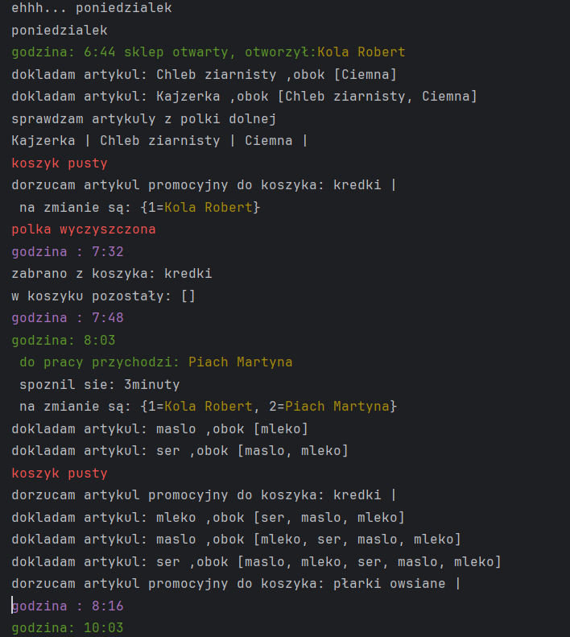

Aplikacja milionerzy napisana w środowisku NetBeans, która oparta jest na
bibliotece Swing. Pytania są losowane z czterech dostępnych dla każdego etapu, zapis postępów
prowadzony jest poprzez obiekty odpowiednio utworzonej klasy. Rekordowe wyniki zapisywane są do pliku ".txt"
Aplikacja milionerzy napisana w środowisku NetBeans, która oparta jest na
bibliotece Swing. Pytania są losowane z czterech dostępnych dla każdego etapu, zapis postępów
prowadzony jest poprzez obiekty odpowiednio utworzonej klasy. Rekordowe wyniki zapisywane są do pliku ".txt"
Pobierz plik jar
Pobierz pliki aplikacji
Program bezokienkowy ListaList to projekt w którym starałem się
efektywnie wykorzystać struktury języka Java oraz jego obiektowy charakter, każdy dzień to ciąg losowo generowanych
wydarzeń. Całość oparta jest na opóźnieniu wątków dzięki czemu program wykorzystuje upływ czasu
Pobierz plik jar

Ostatnim i najważniejszym dla mnie projektem jest strona na której
obecnie się Państwo znajdujecie. Została ona utworzona od podstaw przeze mnie zarówno we Front-Endzie jak i w Back-Endzie. Odnośniki do podstron
oraz baza danych "wiszą" na endpointach Springa i klasach Javy. Front-end jest wykonany w JavaScript,
HTML, CSS a strona pisana była w środowisku inteliJ z wykorzystaniem Maven
Pobierz pliki kontrolerów
strony